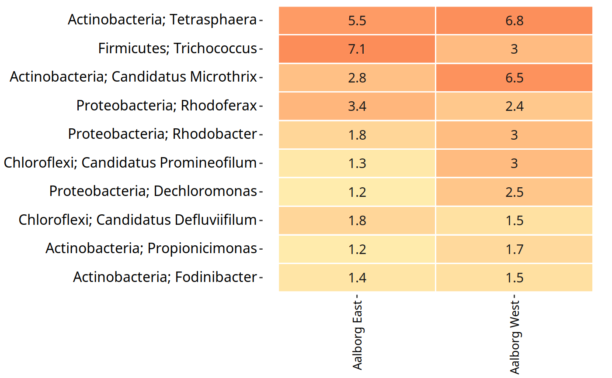
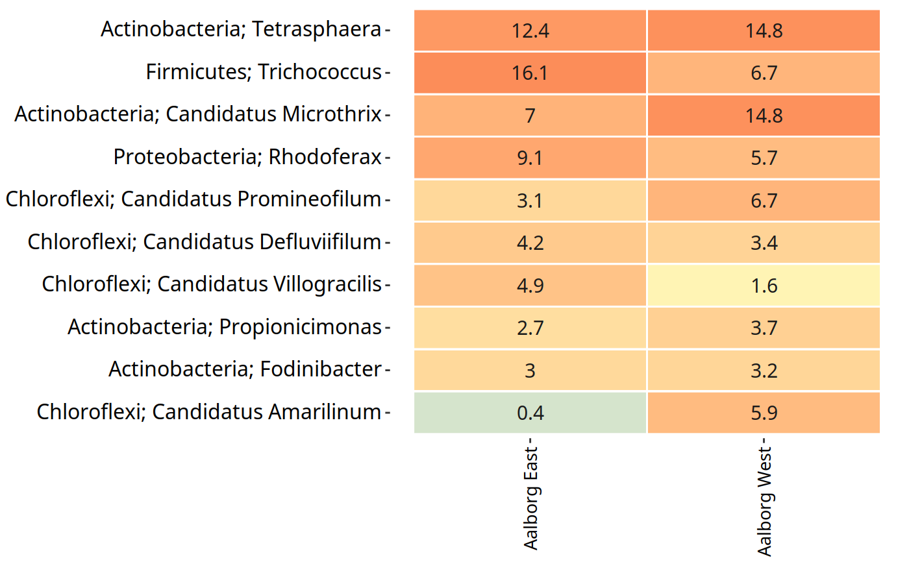
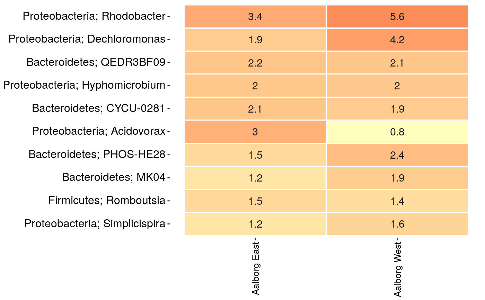

amp_subset_taxa.RdSubsets the data in ampvis2 objects based on taxonomy and returns the subsetted object.
amp_subset_taxa(data, tax_vector)
| data | (required) Data list as loaded with |
|---|---|
| tax_vector | (required) A vector with the taxonomic groups with which to perform the subset. The prefixes |
| normalise | (logical) |
| remove | (logical) If set to TRUE, then the taxa matching the provided vector will be removed instead of being the only ones kept in the data. (default: |
A modifed ampvis2 object
The taxonomy subset is done by providing a tax_vector of taxa names which are then matched to the taxonomy table, where all other taxa not matching the tax_vector are removed. If remove = TRUE, then the matching taxa are the ones being removed instead. The taxa names in tax_vector will be matched in all columns of the taxonomy table.
By default the raw read counts in the abundance matrix are normalised (transformed to percentages) by some plotting functions automatically (for example amp_heatmap, amp_timeseries, and more). This means that the relative abundances shown will be calculated based on the remaining taxa after the subset, not including the removed taxa, if any. To circumvent this, set normalise = TRUE when subsetting with the amp_subset_taxa and amp_subset_samples functions, and then set raw = TRUE in the plotting function. This will transform the OTU counts to relative abundances BEFORE the subset, and setting raw = TRUE will skip the transformation in the plotting function, see the example below.
data("MiDAS")
subsettedData <- amp_subset_samples(MiDAS,
Plant %in% c("Aalborg West", "Aalborg East"),
normalise = TRUE
)
amp_heatmap(subsettedData,
group_by = "Plant",
tax_aggregate = "Phylum",
tax_add = "Genus",
raw = TRUE
)
#Load example data data("AalborgWWTPs") #An overview heatmap of the data: amp_heatmap(AalborgWWTPs, tax_aggregate = "Genus", group_by = "Plant", tax_add = "Phylum" )#Remove all taxa except the phyla Chloroflexi and Actinobacteria #and the Genera Rhodoferax and Trichococcus: tax_vector <- c("p__Chloroflexi", "p__Actinobacteria", "g__Rhodoferax", "g__Trichococcus") AalborgWWTPs_subset <- amp_subset_taxa(AalborgWWTPs, tax_vector = tax_vector )#> #> #>#The resulting subset: amp_heatmap(AalborgWWTPs_subset, tax_aggregate = "Genus", group_by = "Plant", tax_add = "Phylum" )#Or if remove = TRUE then the taxa in tax_vector are the ones being removed: AalborgWWTPs_subset <- amp_subset_taxa(AalborgWWTPs, tax_vector = tax_vector, remove = TRUE )#> #> #>#The resulting subset: amp_heatmap(AalborgWWTPs_subset, tax_aggregate = "Genus", group_by = "Plant", tax_add = "Phylum" )